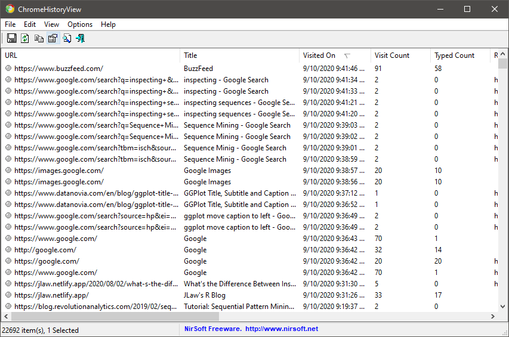

Typically when thinking of pattern mining people tend to think of Market Basket Analysis with the conventional example showing people typically buy both Beer and Diapers in the same trip. When order doesn’t matter this is called Association Rules Mining and is implemented by the arules package in R. In this example, the person is buying both diapers and beer. It doesn’t really matter if diapers led to the beer purchase or beer lead to the diaper purchased. However, there are instances where the order of events are important to what we’d consider a pattern. For example, “cause and effect” relationships imply order. Putting your hand on a hot stove leads to burning your hand. The reverse direction of burning your hand leading you to put your hand on a hot stove makes less sense. When the notion of order is applied to association rules mining it becomes “Sequence Mining”. And to do this, we’ll use the arulesSequences package to run the cSPADE algorithm.
Unfortunately, I don’t have access to grocery store data or much other data that would be an interesting use-case for sequence mining. But what I do have is access to my own browsing history. So for this post, I’ll be looking for common sequential patterns in my web own browsing habits.
Getting the Data
I wasn’t able to figure out how to extract my browsing history directly from Chrome in a way that would easily be read into R. However, there are 3rd party programs that can extract browsing histories. In this case, I used a program called BrowsingHistoryView by Nir Sofer. The interface is very straight forward and allowed for extracting my browsing history to a CSV file.

From this program I was able to extract 85 days worth of browsing history from 2020-06-13 through 2020-09-09.
Loading Libraries and Reading in Data
The libraries used in this analysis are the usual gang of tidyverse, lubridate, ggtext which are often used in this blog. Some new ones specific for this analysis are:
arulesSequences - Which will run the sequence mining algorithmtidygraph and ggraph - Which will allow for plotting my browsing history as a directed graph
library(tidyverse) #Data Manipulation and Plotting
library(lubridate) #Date Manipulation
library(arulesSequences) #Running the Sequence mining algorithm
library(ggtext) #Making adding some flair to plots
library(tidygraph) ## Creating a Graph Structure
library(ggraph) ## Plotting the Network Graph Structure
A .csv file was created from the Browsing History View software and read into R through readr.
browsing_history <- read_csv('browsing_history_v2.csv')
The read-in data looks as follows:
Looking at the data there are a number of cleaning steps that will need to be done to make the sequence mining more useful.
- The variable names are not machine friendly and contain spaces,
- Some of the URLs are redirects or generated and therefore not URLs I specifically went to. I’ll want to exclude those.
- Visited On is a character rather than a date
- If we’re looking for common patterns, I should probably limit the URLs to just the domains as its very unlikely that I would read the same news articles multiple times.
The following code block carries out the cleaning steps outlined above:
browsing_history_cleaned <- browsing_history %>%
#Make the names more R friendly
janitor::clean_names() %>%
#Subset to URLs I either typed or
#Linked to (excluding redirects/form submissions)
filter(transition_type %in% c('Link', 'Typed'),
str_detect(transition_qualifiers, 'Chain Start')
)%>%
#Keep Only the Base URL and remove the prefix
mutate(base_url = str_remove(url, '^https?:\\/\\/') %>%
str_remove('^www\\.') %>%
str_extract(., '^.+?\\/'),
#Parse the Date Format
dttm = mdy_hms(visited_on),
ds = as.Date(dttm)
) %>%
select(base_url, dttm, title, ds)
The above block:
- Uses
janitor::clean_names() to convert the column names into an R-friendly format (Visited On -> visited_on)
- Keeps only the ‘Typed’ and ‘Link’ transition types to keep only URLs I either typed to or clicked to
- Keep only ‘Chain Start’ qualifiers to remove URLs that came from redirects
- Create a
base_url field by removing the “http[s]://” and “www.” strings if they exist.
- Converts
visited_on into both a timestamp and a datestamp
- Only keeps the four columns we’re interested in.
After these changes, the data looks like:
| watch.wwe.com/ |
2020-06-13 14:59:23 |
wwe network - undertaker: the last ride |
2020-06-13 |
| watch.wwe.com/ |
2020-06-13 14:59:28 |
wwe network - undertaker: the last ride |
2020-06-13 |
| google.com/ |
2020-06-13 16:33:37 |
vtt to srt - google search |
2020-06-13 |
| twitter.com/ |
2020-06-13 17:19:55 |
home / twitter |
2020-06-13 |
| twitter.com/ |
2020-06-13 17:20:03 |
home / twitter |
2020-06-13 |
Sessionizing the Data
Even though I have a date field for my browsing history, the cSPADE algorithm is going to want to be able to differentiate between when one session begins and another session ends. While a reasonable choice might be to break things apart by day, it likely that on weekends I have multiple browsing sessions which can sometimes stretch past midnight. So a more reasonable choice might be to say a new session begins if there is a gap of at least 1 hour since the last page I browsed to.
Another aspect of the data that I’d like to deal with is to eliminate when I go to multiple pages within the same domain. Having an eventual rule that “twitter.com/ -> twitter.com” isn’t that interesting. So I will also remove any consecutive rows that have the same domain.
collapsed_history <- browsing_history_cleaned %>%
#Order by Time
arrange(dttm) %>%
# Create a new marker every time a Page Browsing is more than 1 hour since
# the last one
# Also, create a segment_id to identify each session
mutate(time_diff = dttm-lag(dttm),
#Count Segments as more than an hour btw events
new_segment = if_else(is.na(time_diff) | time_diff >= 60*60, 1, 0),
segment_id = cumsum(new_segment)
) %>%
group_by(segment_id) %>%
arrange(dttm) %>%
#Remove Instances where the same baseurl appears consecutively
filter(base_url != lag(base_url) | is.na(lag(base_url))) %>%
#Create Within Segment ID
mutate(item_id = row_number()) %>%
select(segment_id, ds, dttm, item_id, base_url) %>%
ungroup() %>%
#Convert Everything to Factor
mutate(across(.cols = c("segment_id", "base_url"), .f = as.factor))
In order to create segment_ids to represent each session, I use dplyr::lag() to calculate the difference in seconds between each event. Then when the event occurs more than 1 hour after the prior event I mark it with a 1 in the new_segment column. Then using the cumsum option, I can fill down the segment_ids to all the other events in that session.
Similarly I use the lag function to remove consecutively occurring identical base_url.
Finally, a quirk of the arulesSequences package is that the “items” or the URLs in this case must be factors.
The data for the 154 browsing sessions now looks like:
collapsed_history %>% head(5) %>% knitr::kable()
| 1 |
2020-06-13 |
2020-06-13 14:59:23 |
1 |
watch.wwe.com/ |
| 2 |
2020-06-13 |
2020-06-13 16:33:37 |
1 |
google.com/ |
| 2 |
2020-06-13 |
2020-06-13 17:19:55 |
2 |
twitter.com/ |
| 2 |
2020-06-13 |
2020-06-13 17:20:09 |
3 |
gmail.com/ |
| 2 |
2020-06-13 |
2020-06-13 17:24:14 |
4 |
twitter.com/ |
Constructing the Transactions Data Set for arulesSequences
I haven’t found a ton of resources online about using the arulesSequences package. This blog post from Revolution Analytics has been one of the best that I’ve found. However, their process involves exporting to .csv and then reading back in to create the transactions data set. Personally, I’d like to avoid doing as much outside of R as possible.
However, the blog post does provide a good amount of detail about how to properly get the data in the proper format. Using the as function, I can convert the previous data frame into a “transactions” format and set the following fields for use in cSPADE:
- items: The elements that make up a sequence
- sequenceID: The identifier for each sequence
- eventID: The identifier for an item within a sequence
sessions <- as(collapsed_history %>% transmute(items = base_url), "transactions")
transactionInfo(sessions)$sequenceID <- collapsed_history$segment_id
transactionInfo(sessions)$eventID = collapsed_history$item_id
If I wanted to use better controls around time gaps, I would need to provide better information about time. But since this is pretty basic, I don’t use that field as the differentiation between sessions is enough.
The Transaction data class can be viewed with the inspect() function:
inspect(head(sessions))
## items transactionID sequenceID eventID
## [1] {items=watch.wwe.com/} 1 1 1
## [2] {items=google.com/} 2 2 1
## [3] {items=twitter.com/} 3 2 2
## [4] {items=gmail.com/} 4 2 3
## [5] {items=twitter.com/} 5 2 4
## [6] {items=gothamist.com/} 6 2 5
Having the “items=” for every items is a little annoying so let’s remove that by altering the itemLabels for the transactions set:
itemLabels(sessions) <- str_replace_all(itemLabels(sessions), "items=", "")
inspect(head(sessions))
## items transactionID sequenceID eventID
## [1] {watch.wwe.com/} 1 1 1
## [2] {google.com/} 2 2 1
## [3] {twitter.com/} 3 2 2
## [4] {gmail.com/} 4 2 3
## [5] {twitter.com/} 5 2 4
## [6] {gothamist.com/} 6 2 5
Much better.
Running the cSPADE algorithm
The sequence mining algorithm can be run by using the cspade() function in the arulesSequences package. Before running the algorithm, I’ll need to explain the concept of support. Support can be best thought of as the proportion of sessions that contain a certain URL. Why that’s important is that the cSPADE algorithm works recursively to find the frequent patterns starting with 1-item sets, then moving to 2-items, etc. In order to limit how much time the algorithm will run for, you can set a minimum support threshold. Why this helps is that by definition the support of a 2-item set will be less than or equal to the support of either 1-item set. For example, if A occurs 40% of the time, A and B cannot occur more frequently.
So if A alone does not meet the support threshold, then we don’t need to care about any 2 or more item subsets that contain A.
For this purpose I’ll set a minimum support of 25%. The cspade function will return all of the frequent itemsets that occur in my browsing data.
itemsets <- cspade(sessions,
parameter = list(support = 0.25),
control = list(verbose = FALSE))
The summary() function will provide a lot of useful information, but we’ll just look at the first few rows with inspect():
inspect(head(itemsets))
## items support
## 1 <{buzzfeed.com/}> 0.4090909
## 2 <{en.wikipedia.org/}> 0.3311688
## 3 <{facebook.com/}> 0.3311688
## 4 <{github.com/}> 0.3051948
## 5 <{google.com/}> 0.8051948
## 6 <{gothamist.com/}> 0.4090909
##
Here we see the results of a series of 1-item sets where the support is the number of sessions containing at least 1 visit to that URL. Apparently I use google A LOT as it appears in 80% of my sessions.
We can also convert the itemsets data back to a data frame using the as() function and go back to using the usual dplyr or ggplot functions. For example, I can visualize the 10 Most Frequent Sequences I visit based on the support metric:
#Convert Back to DS
itemsets_df <- as(itemsets, "data.frame") %>% as_tibble()
#Top 10 Frequent Item Sets
itemsets_df %>%
slice_max(support, n = 10) %>%
ggplot(aes(x = fct_reorder(sequence, support),
y = support,
fill = sequence)) +
geom_col() +
geom_label(aes(label = support %>% scales::percent()), hjust = 0.5) +
labs(x = "Site", y = "Support", title = "Most Frequently Visited Item Sets",
caption = "**Support** is the percent of segments the contain the item set") +
scale_fill_discrete(guide = F) +
scale_y_continuous(labels = scales::percent,
expand = expansion(mult = c(0, .1))) +
coord_flip() +
cowplot::theme_cowplot() +
theme(
plot.caption = element_markdown(hjust = 0),
plot.caption.position = 'plot',
plot.title.position = 'plot'
)

Now we see some of the 2-item sets. Not only do I use Google in 80% of sessions. In 66% of sessions I visit google twice!
Turning Frequent Sequences into Rules
While knowing what URLs occur frequently is interesting, it would be more interesting if I could generate rules around what websites lead to visits to other websites.
The ruleInduction() function will turn the item sets into “if A then B” style rules. To control the size of the output, I will introduce the concept of confidence. The Confidence of an “If A then B” rule is the % of the times the rule is true when A occurs. So if “if A then B” has a 50% confidence then when A occurs we have a 50% chance of seeing B vs. seeing anything other than B.
For this post, I’ll use a minimum confidence of 60%.
rules <- ruleInduction(itemsets,
confidence = 0.6,
control = list(verbose = FALSE))
inspect(head(rules, 3))
## lhs rhs support confidence lift
## 1 <{gothamist.com/}> => <{westsiderag.com/}> 0.2727273 0.6666667 1.901235
## 2 <{gothamist.com/}> => <{twitter.com/}> 0.2662338 0.6507937 1.113580
## 3 <{t.co/}> => <{twitter.com/}> 0.3246753 0.7812500 1.336806
##
The returned data structure has 5 fields:
- lhs: Left-hand side - The “A” in our “if A then B” rule
- rhs: Right-hand side - The “B” in our “if A then B” rule
- support: The % of sessions where “A then B” occurs
- confidence: How often the rule is true (If A occurs the % of Time that B occurs)
- lift: The strength of the association. Defined as the ratio of support “A then B” divided by the Support of A times the Support of B. In other words, how much more likely are we to see “A and B together” vs. what we would expect if A and B were completely independent of each other.
The first row shows two NYC specific blogs, one of NYC overall and one for the Upper West Side. The support shows that 27% of my sessions include these two blogs. The confidence shows that if I visit Gothamist there’s 67% chance I’ll visit WestSideRag after. Finally, the lift shows that the likelihood of this rule is 90% higher than you’d expect if there was no relation between my visiting these sites.
Redundant Rules
In order to create the most effective and simplest rules we’ll want to remove redundant rules. In this context a rule is redundant when a subset of the left-hand side has a higher confidence than the rule with more items on the left-hand side. In simpler terms, we want to simplest rule that doesn’t sacrifice information. For example, {A, B, C} -> D is redundant of {A, B} -> {D} if the confidence of the 2nd rule is greater than or equal to the 1st
A real example from this data is:
| <{t.co/}> |
=> <{twitter.com/}> |
0.3246753 |
0.7812500 |
1.336806 |
| <{twitter.com/}, {t.co/}> |
=> <{twitter.com/}> |
0.3181818 |
0.7777778 |
1.330864 |
The addition of “twitter.com” to the left-hand side does not make for a more confident rule so therefore it is redundant.
Removing redundant rules can be done easily with the is.redundant() function:
rules_cleaned <- rules[!is.redundant(rules)]
The rules class can also be converted back to a data.frame with the as() function. Then we can use tidyr::separate() to break apart the rule column into the lhs and rhs columns.
rules_df <- as(rules_cleaned, "data.frame") %>%
as_tibble() %>%
separate(col = rule, into = c('lhs', 'rhs'), sep = " => ", remove = F)
Now we can look at the highest confidence rules:
rules_df %>%
arrange(-confidence) %>%
select(lhs, rhs, support, confidence, lift) %>%
head() %>%
knitr::kable()
| <{google.com/},{google.com/},{google.com/},{google.com/}> |
<{google.com/}> |
0.3701299 |
0.9193548 |
1.141779 |
| <{github.com/}> |
<{google.com/}> |
0.2792208 |
0.9148936 |
1.136239 |
| <{buzzfeed.com/},{google.com/}> |
<{google.com/}> |
0.2597403 |
0.8510638 |
1.056966 |
| <{t.co/},{google.com/}> |
<{google.com/}> |
0.2727273 |
0.8400000 |
1.043226 |
| <{lifehacker.com/}> |
<{reddit.com/}> |
0.2532468 |
0.8297872 |
1.726854 |
| <{google.com/}> |
<{google.com/}> |
0.6623377 |
0.8225806 |
1.021592 |
And this is pretty boring. I wind up on Google a lot, so it appears in a lot of the rules. So let’s make this more interesting by removing Google from the results and by also looking at both confidence and lift.
rules_df %>%
#Remove All Rules that Involve Google
filter(!str_detect(rule, '\\{google.com\\/\\}')) %>%
#Keep only Rule, Confidence, and Lift - 1
transmute(rule, confidence, lift = lift - 1) %>%
#Pivot Lift and confidence into a single column
pivot_longer(cols = c('confidence','lift'),
names_to = "metric",
values_to = "value") %>%
group_by(metric) %>%
#Keep only the Top 10 Rules for Each Metric
top_n(10, value) %>%
ungroup() %>%
# Reorder so that order is independent for each metrics
ggplot(aes(x = tidytext::reorder_within(rule, value, metric),
y = value,
fill = rule)) +
geom_col() +
geom_label(aes(label = value %>% scales::percent()),
hjust = 0) +
scale_fill_discrete(guide = F) +
tidytext::scale_x_reordered() +
scale_y_continuous(label = scales::percent,
limits = c(0, 1),
expand = expansion(mult = c(0, .1))) +
labs(x = "Rule",
y = "",
title = "Top Rules by Confidence and Lift",
caption = "**Confidence** is the probability RHS occurs
given LHS occurs <br />
**Lift** is the increased liklihood of seeing LHS & RHS together vs. independent") +
facet_wrap(~metric, ncol = 1, scales = "free_y") +
coord_flip() +
theme_minimal() +
theme(
plot.caption = element_markdown(hjust = 0),
plot.caption.position = 'plot',
strip.text = element_textbox(
size = 12,
color = "white", fill = "#5D729D", box.color = "#4A618C",
halign = 0.5, linetype = 1, r = unit(5, "pt"), width = unit(1, "npc"),
padding = margin(2, 0, 1, 0), margin = margin(3, 3, 3, 3)
)
)

Some of the high lift rules that occur are:
- I visit WestSideRag after Gothamist
- I visit Reddit after LifeHacker
- I visit Buzzfeed after Twitter.
By the way, all this is true. My usually weekday pattern tends to be Twitter -> Gothamist -> WestSideRag -> ILoveTheUpperWest -> Buzzfeed -> LifeHacker -> Reddit.
So it does appear that the Sequence Mining rules do in fact represent my browsing habits! But certain sites like the 2nd Upper West Side blog did not make the top rules.
Visualizing these relationships as a graph
Ultimately, my browsing habits can be restructured as a directed graph where each URL leads to another URL. Then rather than relying on statistical measures like Support, Confidence, and Lift, I can visualize my browsing as a network. However, to turn my data into an edge list I need to re-structure the URLs from a sequential list into a series of “Source/Destination” edges.
To do this, I’ll group by each browsing session, setting the URL to the "source’ and using dplyr::lead() to grab the URL from the next row to form the destination. Then since for the last URL, the destination will be null, I’ll remove these endpoints from the data. Finally, to create edge weightings I’ll count the number of instances for each source/destination pair.
collapsed_history_graph_dt <- collapsed_history %>%
group_by(segment_id) %>%
transmute(item_id, source = base_url) %>%
mutate(destination = lead(source)) %>%
ungroup() %>%
filter(!is.na(destination)) %>%
select(source, destination, segment_id) %>%
count(source, destination, name = 'instances')
In order to create the graph, I’ll be using the tidygraph and ggraph packages to convert the data frame into the appropriate format and visualize the network in a ggplot style.
To make the resulting network more readable, I’ll filter my edge list to only those with at least 15 occurrences and then use tidygraph::as_tbl_graph to convert to a graph-friendly data type.
g <- collapsed_history_graph_dt %>%
filter(instances > 14) %>%
as_tbl_graph()
Creating Graph Clusters
To make the visualization a little more interesting I thought it would be fun to cluster the network. The igraph::cluster_optimal function will calculate the optimal community structure of the graph. This membership label then gets applied as a node attribute to the graph object g created in the prior code block.
clp <- igraph::cluster_optimal(g)
g <- g %>%
activate("nodes") %>%
mutate(community = clp$membership)
Plotting the Network WIth ggraph
Ggraph follows a similar syntax to ggplot where the data object is based in and then there are geoms to reflect the nodes/edges of the plot. The layout option specifies how the nodes and edges will be laid out. Here I’m using the results of the Fruchterman-Reingold algorithm for a force-directed layout. As used in this code block the relevant geoms are:
geom_node_voronoi - Used to plot the clustering as the background of the graphgeom_edge_parallel - Since this is a directional graph, it will draw separate parallel arrows for each direction. The shading will be based on the log number of instances.geom_node_point - Plots a circle for each nodegeom_node_text - Plots the names of the nodes and reduces overlap
set.seed(20201029)
ggraph(g, layout = 'fr') +
geom_node_voronoi(aes(fill = as.factor(community)), alpha = .4) +
geom_edge_parallel(aes(edge_alpha = log(instances)),
#color = "#5851DB",
edge_width = 1,
arrow = arrow(length = unit(4, 'mm')),
start_cap = circle(3, 'mm'),
end_cap = circle(3, 'mm')) +
geom_node_point(fill = 'orange', size = 5, pch = 21) +
geom_node_text(aes(label = name), repel = T) +
labs(title = "My Browsing History",
caption = "Minimum 15 Instances") +
scale_fill_viridis_d(guide = F) +
scale_edge_alpha_continuous(guide = F) +
theme_graph()

This graph shows 5 clusters:
- Twitter -> Gothamist -> WestSideRag -> ILoveTheUpperWestSide
- The websites I typically visit after work on weekdays
- Datacamp / Google Docs
- When I did some Datacamp courses, I take notes in Google Docs so constantly switching back and forth makes sense.
- Facebook.com / l.facebook.com
- This is just using Facebook. But interesting that Facebook has no frequent connection outside of the Facebook ecosystem.
- BuzzFeed/LifeHacker
- This a the last piece of my usual post-work routine. But perhaps it occurs later after the Twitter/NYC Blog Cluster
- The Google Centered Cluster
- Google is the center of my browsing universe but some fun connections here are 127.0.0.1:4321 which is the local instance when I’m developing this blog. This co-occurs with lots to trips to Google, Github, and Stack Overflow while I try to figure out / debug aspects of my blog development pipeline.
Conclusion
There weren’t a ton of resources that showed how to use the arulesSequences package in my searches and most required dumping and rereading a .csv file. Hopefully, this post showed that it isn’t necessary to do that. Additionally, it shows an example of how sequence mining can be used to identify interesting patterns when the order is important. There is a lot of functionality of the arulesSequences package not touched upon in this post, but this should serve as good starting point.
As for visualization, I’ve covered how to plot rules in the usual tabular structure with ggplot2 as well as a network using ggraph. I really like the way the network visualization worked out and in a future post I may go more in-depth to learn about how to best use tidygraph and ggraph.